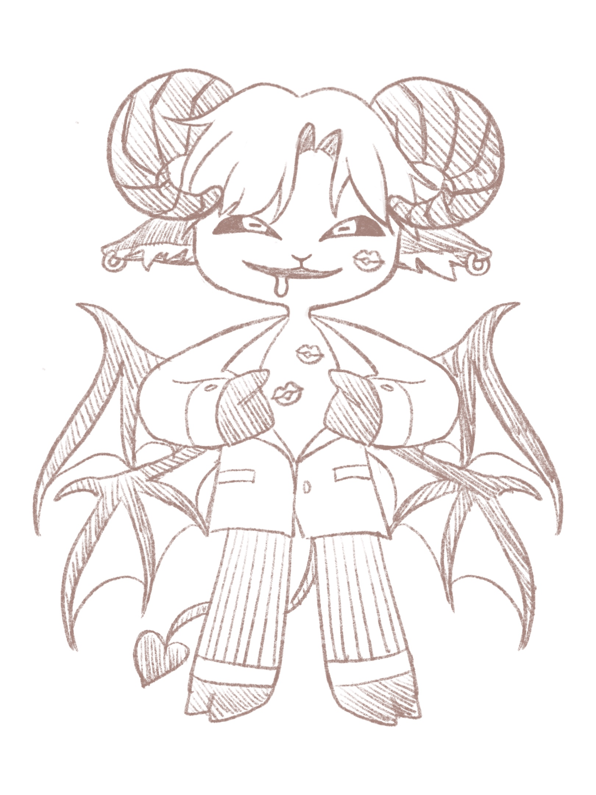

色慾
色慾 Luxuria
《群》
楊格是圈內頂尖的公關總監，專替富二代擺爛、暴網紅洗人設。但他私底下的綽號叫「山羊」，這在圈子裡只有一個意思：他是只獵不走心的頂級玩家。
楊格是圈內頂尖的公關總監，專替富二代擺爛、暴網紅洗人設。他的手機響了揚起某種資料迴，檔名只有一個字：「群」。點開來全部裸照的標籤「A04/極致緊實」、「B12/配合度高」、「C09/心累好騙」。
前陣子，他釘上了喬安。喬安是出了名的冰山女記者。終於，那個他上釣了。喬安在飯店房間裡展現出與平日截然不同的熱情。但在那一刻，楊格腦子裡想的不是「我愛她」，而是冰冰冰冰的一句：「終於耕了」。
對他來說，喬安不再是一個人。只是一個被用過的一次性容器。他穿上褲子就走，把她像垃圾一樣留在房間裡。